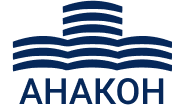

+375 (33) 354-76-45 КОМПЛЕКСНОЕ УПРАВЛЕНИЕ НЕДВИЖИМЫМ ИМУЩЕСВТОМ НАШИ ПРЕИМУЩЕСТВА ОПЫТ Компания АНАКОН имеет многолетний успешный опыт по управлению и эксплуатации различных объектов недвижимости: бизнес-центры, офисные здания, жилые комплексы, подземные и наземные паркинги, фитнес-центры. Наши специалисты работают в этой сфере более десяти лет. Используйте наш опыт для реализации своих желаний. ИНДИВИДУАЛЬНОСТЬ Организуем свою работу таким образом, чтобы ваши сотрудники не отвлекались от выполнения своих задач. Компания АНАКОН учитывает график работы клиента, что особенно важно для IT-компаний. Вы не замечаете нас, но чувствуете результат нашей работы. ЭФФЕКТИВНОСТЬ Достигаем максимальных результатов с минимально возможными затратами. Продуманная до мелочей система управления объектом делает каждое здание максимально эффективным и удобным для пребывания. Клиент получает выбор из нескольких вариантов решения задач. НЕСТАНДАРТНОСТЬ Используем креативный подход там, где привычный - не работает. Применяем нестандартные инженерные решения. Находим новые способы выполнения поставленных задач. Нестандартность – залог Вашего успеха. КАК МЫ РАБОТАЕМ ЛИЧНЫЙ ИНЖЕНЕР Личный инженер назначается на каждый объект, который возьмет на себя решение всех вопросов в процессе эксплуатации: ведет учет всех выполняемых работ и необходимую документацию, является представителем в государственных органах и несет личную ответственность за стабильную работу объекта. ОНЛАЙН ПОДДЕРЖКА Онлайн поддержка, прием заявок через мессенджеры. Внедряемся в существующие системы контроля здания. Отчеты о выполненных работах. Оперативно реагируем на срочные вызовы. Круглосуточная аварийная служба. АУТСТАФФИНГ Аутстаффинг (outstaffing) - юридический перевод сотрудников из штата компании-заказчика в штат нашей компании с передачей статуса работодателя (нанимателя). Такая услуга необходима для модернизации, улучшения бизнес-развития Вашей организации. Мы официально документально оформляем трудовые отношения с сотрудниками, выводимыми за штат, не меняя их рабочего места, обязанностей, распорядка дня. УСЛУГИ КОМПЛЕКСНОЕ УПРАВЛЕНИЕ ОБЪЕКТОМ Компания АНАКОН берет на себя все функции по управлению, начиная от сдачи объекта в эксплуатацию, передачи инженерных сетей и подписания договоров с поставщиками услуг. Организация работы объекта недвижимости с нуля: приемка и запуск в эксплуатацию зданий, передача сетей теплоснабжения, водоснабжения, электроснабжения городу. Претензионная работа с подрядчиками и субподрядчиками по гарантии. Организация работы товариществ собственников: проведение собраний, ведение переписки и протоколов, подписание договоров, работа с арендаторами, взыскание задолженности за ЖКУ, разработка правил внутреннего распорядка. При комплексном управлении объектом компания АНАКОН контролирует выполнение договорных обязательств поставщиками услуг, назначает ответственных согласно нормативным документам, взаимодействует с государственными органами по вопросам эксплуатации. ТЕХНИЧЕСКОЕ ОБСЛУЖИВАНИЕ И ЭКСПЛУАТАЦИЯ ЗДАНИЙ Компания АНАКОН выполняет техническое обслуживание и эксплуатацию инженерных систем: теплоснабжение, электроснабжение, кондиционирование, приточно-вытяжная вентиляция, водоснабжение с повысительными насосами, водоотведение, ливневая канализация с погружными насосами, системы бесперебойного электроснабжения (дизель-генератор), системы мультипаркингов.Техническое обслуживание и эксплуатация зданий включает в себя: комплекс работ по содержанию, обслуживанию и ремонту здания (сооружения), обеспечение безотказной работы объекта в соответствии с его функциональным назначением, обеспечение установленного уровня безопасности и работоспособности систем контроля и управления доступа (СКУД), поддержание установленного внутреннего климата (температурно-влажностного режима), поддержание санитарно-гигиенического состояния объекта и придомовой территории. ТЕКУЩИЙ РЕМОНТ Компания АНАКОН производит текущий ремонт как в составе комплексного обслуживания объекта недвижимости, так и по разовым договорам: малярные работы: окраска стен, потолков, любых поверхностей и конфигураций различными видами красок; внутренние и наружные штукатурные работы: ремонт стен и откосов, фасадов зданий; изоляционные работы: гидроизоляция из рулонных материалов, окрасочная, из цементных растворов, из полимерных листовых материалов, тепло- и звукоизоляция из плит и сыпучих материалов; устройство дорожных покрытий пешеходных зон из тротуарных плит – установка бортового камня, укладка плит; устройство кровель: рулонные и мастичные кровли, кровли из листовых и штучных материалов, кровли из асбестовых и цементно-волокнистых волнистых листов, кровли из мелкоштучных материалов, из листовой стали, металлического профнастила, металлочерепицы; устройство тепловой изоляции ограждающих конструкций зданий и сооружений. РЕМОНТ И МОДЕРНИЗАЦИЯ СИСТЕМ ОСВЕЩЕНИЯ Компания АНАКОН проведет обследование систем освещения вашего объекта и выполнит: экспресс-аудит освещения; подбор источников света и установку световых приборов соответственно требованиям, предъявляемым к осветительным системам; расчет освещенности с выбором наиболее энергоэффективного решения; подбор и установку автоматической системы контроля и управления освещением (АСКУО); разработку технико-экономического обоснования; ремонт внутреннего освещения; ремонт декоративной подсветки здания (фасадного освещения); ремонт уличного освещения. КЛИНИНГ Компания АНАКОН осуществляет ежедневную комплексную, поддерживающую и генеральную уборку любых помещений. Мы проводим сухую, влажную, интенсивную уборку в соответствии с определенным режимом и требованиями заказчика. Абсолютный профессионализм сотрудников и наличие лучшего технического оснащения помогают обеспечивать чистоту на самом высоком уровне. Вы экономите время на поиск сотрудников, закупку материалов, инвентаря, дорогостоящей техники, оптимизируете расходы и получаете гарантированную чистоту каждый день. Компания АНАКОН предоставляет высококачественные услуги, такие как: профессиональная мойка стеклянных фасадов в офисах, мойка окон любых помещений. Чистый фасад и окна надолго сохранят аккуратный и эстетичный внешний вид здания, создавая нужное настроение и соответствуя вашему статусу. БУХГАЛТЕРСКИЕ УСЛУГИ Вы занимаетесь своим бизнесом, мы занимаемся вашей бухгалтерией. Компания АНАКОН предоставляет услуги по ведению бухгалтерского учета Вашего объекта недвижимости. Предоставляем как комплексное обслуживание, так и разовые услуги. Работая с нами, вы получаете грамотные консультации по вопросам бухгалтерского и налогового учета, ведение базы в системе 1С: Бухгалтерия или ведение учета в вашей базе на условиях удаленного доступа, оперативное реагирование на запросы и требования налоговой инспекции и фондов. ПРАВОВАЯ ПОДДЕРЖКА ТОВАРИЩЕСТВ СОБСТВЕННИКОВ Создание Товариществ собственников с нуля: проведение первого собрания, разработка устава, регистрация товарищества, разработка штатного расписания и положения об оплате труда, должностных инструкций. Методическая и практическая помощь в деятельности товарищества в соответствии с действующим законодательством, проведение общих собраний, составление смет, разработка правил внутреннего распорядка. Компания АНАКОН проводит анализ финансово-хозяйственной деятельности органов управления ТС. Грамотно проведенная проверка покажет реальное финансовое состояние ТС, выявит необоснованные затраты, подтвердит правильность расчета взносов и поможет составить план расходов в будущем. БЛАГОУСТРОЙСТВО ПРИЛЕГАЮЩЕЙ ТЕРРИТОРИИ Компания АНАКОН выполняет работы по благоустройству территории: ремонт и устройство прилегающей территории: тротуарных дорожек, автостоянок; ремонт и устройство систем освещения; ремонт и устройство заборов и ограждений; ремонт местных дворовых проездов с заменой бордюров, ямочный ремонт; озеленение и установку малых архитектурных форм. ЧТОБЫ ДОСТИЧЬ ЦЕЛИ - НУЖНО К НЕЙ ИДТИ МЫ ВДЫХАЕМ ЭНЕРГИЮ В ЗДАНИЕ ИЛИ ДАЕМ ЕМУ НОВУЮ ЖИЗНЬ ГДЕ БЫ МЫ НИ БЫЛИ – МЫ В НУЖНОМ МЕСТЕ В НУЖНОЕ ВРЕМЯ СВЯЗАТЬСЯ С НАМИ ДАВАЙТЕ ОБСУДИМ ВАШ ПРОЕКТ ООО АНАКОН +375-44-570-57-57 ANAKONBY@GMAIL.COM

ЗАГРУЗКА...